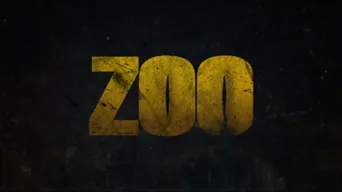

The genetics
Genetics drives the series from start to finish. A biotechnology corporation's proprietary "mother cell", used in medicines, herbicides and feed, causes a mutation that accelerates animal evolution; the series speaks of a mutated "ghost gene", and the protagonist Jackson Oz turns out to carry it too. The search for a cure involves stem cells, gene delivery through mosquitoes or birds, and the risk that a fix applied to the whole biosphere has unintended effects: the final cure sterilises the human race. Later, hybrid creatures spread across the world. Scientists appear on all sides: the corporation, which hides its responsibility and is protected by the government; a secret group, the Shepherds, who both caused and tried to control the crisis; and the protagonists, a zoologist and a veterinary pathologist working against the clock. The series is an adaptation of a James Patterson novel and makes no attempt at realism; no single molecule could accelerate evolution in this way.
The story
Animals around the world begin attacking humans in increasingly coordinated ways. Zoologist Jackson Oz, whose late father Robert had predicted an uprising of the animals, investigates with his friend Abraham Kenyatta, a Kenyan safari guide, the Los Angeles journalist Jamie Campbell, the veterinary pathologist Mitch Morgan and the French intelligence analyst Chloe Tousignant. They discover that the biotechnology company Reiden Global uses a "mother cell", a vector molecule present in its drugs, herbicides and animal feed, which has triggered a mutation in animals. Over three seasons the team develops a cure, sees it fail when the mutation evolves, and competes with a military plan to exterminate the animals, the Noah Objective. They learn that Robert Oz is alive and that a group called the Shepherds caused and tried to control the mutation. The final cure saves the world but leaves humanity sterile; ten years later, hybrid creatures have spread, and the team searches for a cure for human sterility.